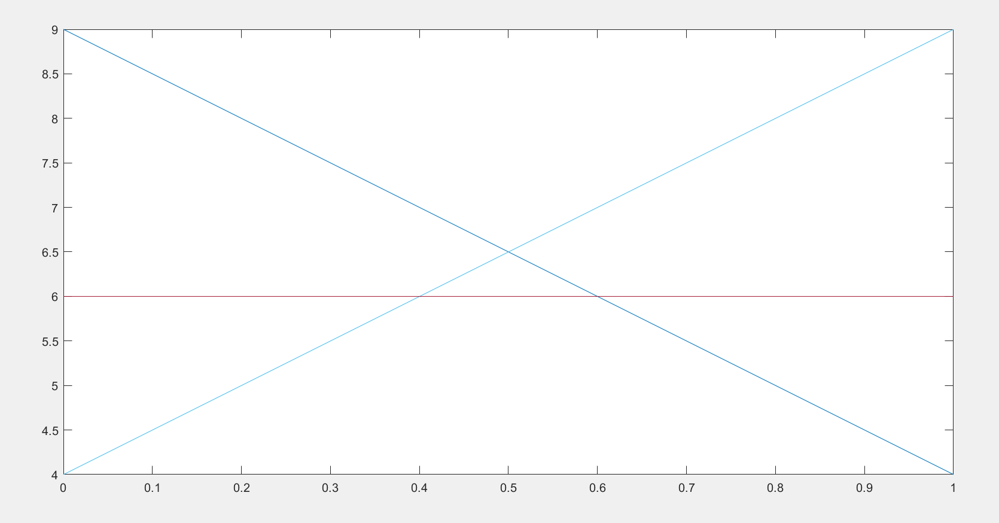
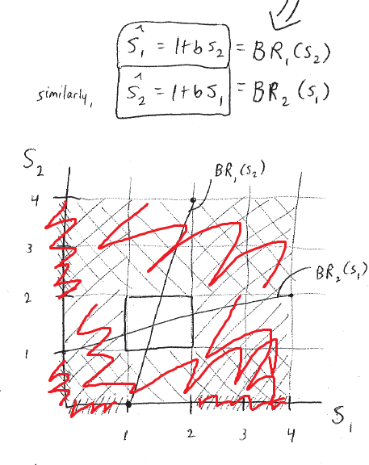
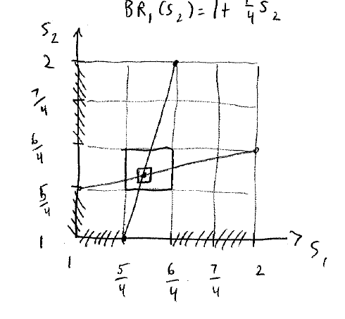

Lecture 4 足球比赛与商业合作的最佳对策
紧跟上节课的后半节的例子，进一步讲述最佳对策的思考方式。
足球比赛
收益矩阵：
| l | r | |
|---|---|---|
| L | (4, -4) | (9, -9) |
| M | (6, -6) | (6, -6) |
| R | (9, -9) | (4, -4) |
表示有40%的概率进球。
通过计算没有最佳对策。
还是通过概率进行计算。
为什么守门的时候没有中路不动呢？通过后面的计算就能知道为什么了。
假设守门员守左边的概率为p，那么右边的概率为1-p.
那么射手采取L的策略的期望为9-5p。
M：6
R：4+5P
画出来的预期收益的曲线如下：

可以发现，如果射中间，那么收益始终是比其他的两种选择收益低的。因此射门员不会选择射中间的门。
千万不要选择在所有情况下都没有最佳对策的决策，像这个例子中，射中间就不能选择。
合伙人博弈
- 两个合伙人每人分享50%的总收益
- 每一个合伙人可以选择投入的精力为，并且在[0, 4]这个区间。
- 总收益为, 在[0, 1/4]之间
最后一项是他的付出，至于为什么最后一项是平方，应该就是问题的设计。
同理也能计算
为了求上面式子的极值，我们对式子进行求导：
进行求导为0：
令b = 1/4, 我们将收益的图画出来：

首先当时，不会小于1，因为小于1会减少自己的收益，同理，当时，也不会大于2。因为此刻努力增加是不会增加自己的收益的。
因此每一个选择的区间都在[1, 2]之间，只剩下一个小的方块。
将图中的那个小方块单独拿出来，接着画出收益曲线：

发现我们依旧能够删去一些区间。
最终我们能够通过递归的删除，得到最终的最有对策，就是图中的交点。
最终最优解就是
这样的组合往往收益是非常低的。
因为在边际成本中，我仅能够获得一半的回报。在经济学中称之为externality。
我们这个时候可以看到b表示的是人之间的协同程度。
如果减小b，根据上面求出的最优解，那么直线的交点就会减小。
这个例子就是传说中的纳什均衡。
结论：The players are playing a best response to each other.